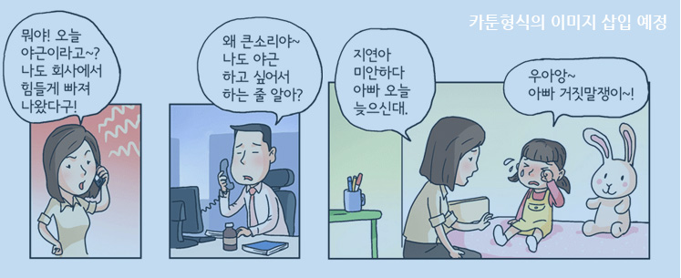

춘천에서 인테리어점을 운영하며 신용에 별 문제가 없었던 김씨(36세)는 불과 몇 개월 사이에 채무불이행자 신세가 되었다.
김씨는 그동안 자재 대금을 신용카드 3개로 결제하며 돌려막기를 해왔었는데 미수가 생기자 곧바로 하나씩 모든 카드가 연쇄적으로
연체되어 신용위기에 몰린 것이다. 요즘 김씨는 불경기속에서 그나마 일이 있어도 현금으로 먼저 모든 자재를 구매해야하는
이중고에 시달리고 있다.

채무불이행자가 되는 경로는 개인사정에 따라 여러 가지가 있겠지만 초스피드로 신용불량에 이르는 이들을 보면 몇 가지
공통점이 있다. 지금은 신용에 이상이 없더라도 아래 한 가지라도 해당되는 사항이 있는 경우 향후 수개월 사이에 채무불이행자가
되는 등 신용위기에 처할 가능성이 높으므로 당장 습관을 고치고 문제해결에 나설 필요가 있다.
-
- 1.카드 돌려막기, 카드깡 습관
-
주변을 둘러보면 카드 서너 개를 돌려막아 가며 수입에 넘치는 과소비를 하는 이들이 있다.
이들의 신용은 언제든지 추락할 수 있는 위험한 상황으로 카드 하나가 연체되면 연쇄적으로 모든
카드가 연체될 위험이 매우 크다. 또한 카드를 이용하여 물품구매를 한 것처럼 하여 현금을 끌어
쓰는 카드깡 역시 곧바로 신용위기로 향하는 위태로운 행태이다.
-
- 2.불법사채 이용하기
-
다급한 상황에서도 최대한 삼가야 할 일 중 하나가 불법사채를 쓰는 것이다. 상상을 초월하는 고리의
사채는 본인의 신용은 물론 온 가족까지 평생 고통의 늪에서 헤어 나오지 못하게 할 수도 있다.
사채처럼 불법적인 것은 아니라도 대부업체에서 대출을 받으면 곧바로 신용하락 요소로 작용하는
데다 상대적으로 고리의 이자에 시달리게 된다.
-
- 3.세금, 공과금의 상습적인 연체
-
공과금이나 세금을 습관적으로 연체하면 신용이 떨어질 수 있다. 공과금이라도 연체기간이 길고 금액이 쌓이면 채무불이행자로 될 가능성이 높아진다.
-
- 4.개인정보 보호에 대한 무감각
-
자신의 개인정보가 유출되어 자신도 모르는 사이에 금융거래에 이용되어 막대한 금전적 피해와 함께
신용이 떨어지고 채무 불이행자가 되기도 한다. 억울한 피해로 구제를 받을 수도 있지만 떨어진 신용의
원상회복에는 복잡한 법적 절차와 함께 오랜 시간과 고통이 따르게 된다.
정상적인 경제생활이 불가능한 채무불이행자는 순식간에 될 수 있지만 한번 떨어진 신용을 회복하는
데는 오랜 노력과 시간이 필요하다. 따라서 신용이 하락하지 않도록 평소의 신용관리가 무엇보다
중요하다.